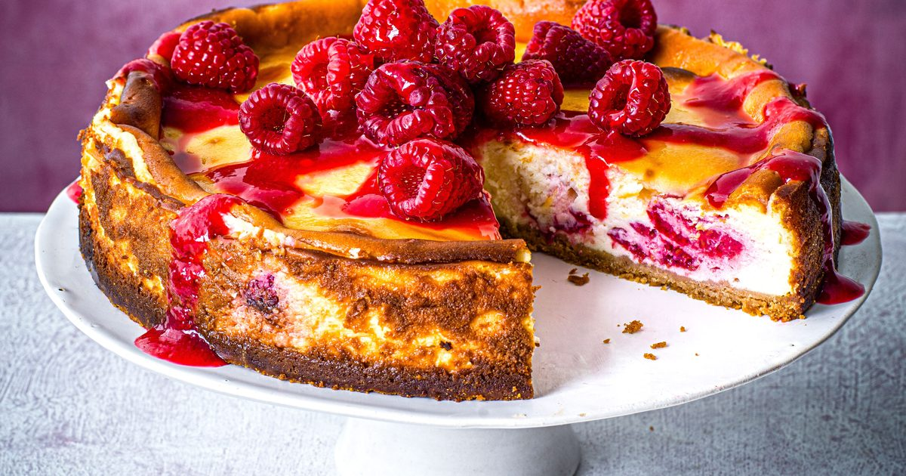

приготовление:
-
Поставить разогреваться духовку на 180 градусов.
-
500 гр сыра Филадельфия достать из холодильника на минут 10. Венчиком перемешать-взбить со 150 гр мелкого сахара и ванилью пару минут. В небольшой мисочке отдельно вилкой смешать 3 яйца, ввести их постепенно в сырную массу, взбить венчиком. Добавить 2 ст.л с горкой муки. Перемешать. И цедру одного лимона. Аккуратно ввести 200 гр свежей малины, перемешав лопаткой.
-
Форму для запекания с внешней стороны обкрутить фольгой, внутри смазать сливочным маслом, вылить смесь внутрь. Постучать формой о стол, чтобы вышел лишний воздух. Поставить форму на противень в духовку, на противень налить где-то литр кипятка. Печь сначала 25 минут, потом снизить температуру до 160 и еще 25-30 минут, потом отключить духовку, приоткрыть дверцу и оставить на час остывать. Можно есть сразу, но лучше после полного остывания дать постоять в холодильнике.
-
.